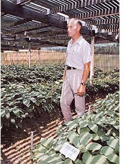

PHOTOS BY MOTHER'S STAFF AND SUPPLIED BY THE AUTHOR
Ginseng can be grown in fields! Dr. Tom Konsler of the Mountain Horticultural Crops Research Station in Henderson County, N. C. uses a wood lath shed to give his plants the necessary 75% shade.